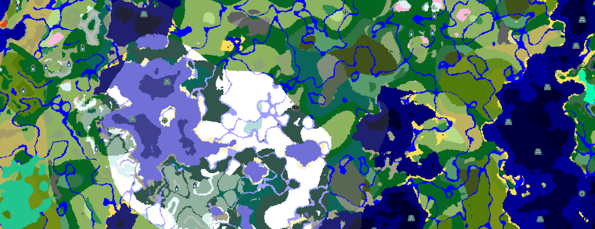

出生点、主城与各基地的坐标速览。坐标仅作记录，不对外开放。
一片自然地形生成的世界的简版示意
世界原点，故事开始的地方
每位玩家上线后的起点，也是最初大家一起开荒、互相认识的地方。附近通常留有早期的小房子和公共设施。
以出生点为原点向四周扩散，往东是主城与沿海，往南是雪原，往西是山林与矿脉。
集合与交易的中心
约着一起玩的时候，大家会在这里碰头，商量今天干什么。
主城附近是服务器商店与转账交易的常驻地，经济往来的热闹地方。
主城里往往立着大家合力建起的地标，是这片海最容易认的坐标。
散落在世界各处的落脚点
红石与自动化的大本营，流水线、农场、转运系统的中枢都聚在这里。
建在海底的玻璃穹顶基地，透过天花板能看到游过的鱼——深海风十足。
远航的出发点，小船停靠在这里，探险家们从这里出海测绘。
海边最高的地标，夜晚亮起时是老远就能看见的归航坐标。
雪原上的临时营地，用来采集资源、顺便看极光。
矿工头子的根据地，依山而建，地下的矿道四通八达。
整片海的俯视角
